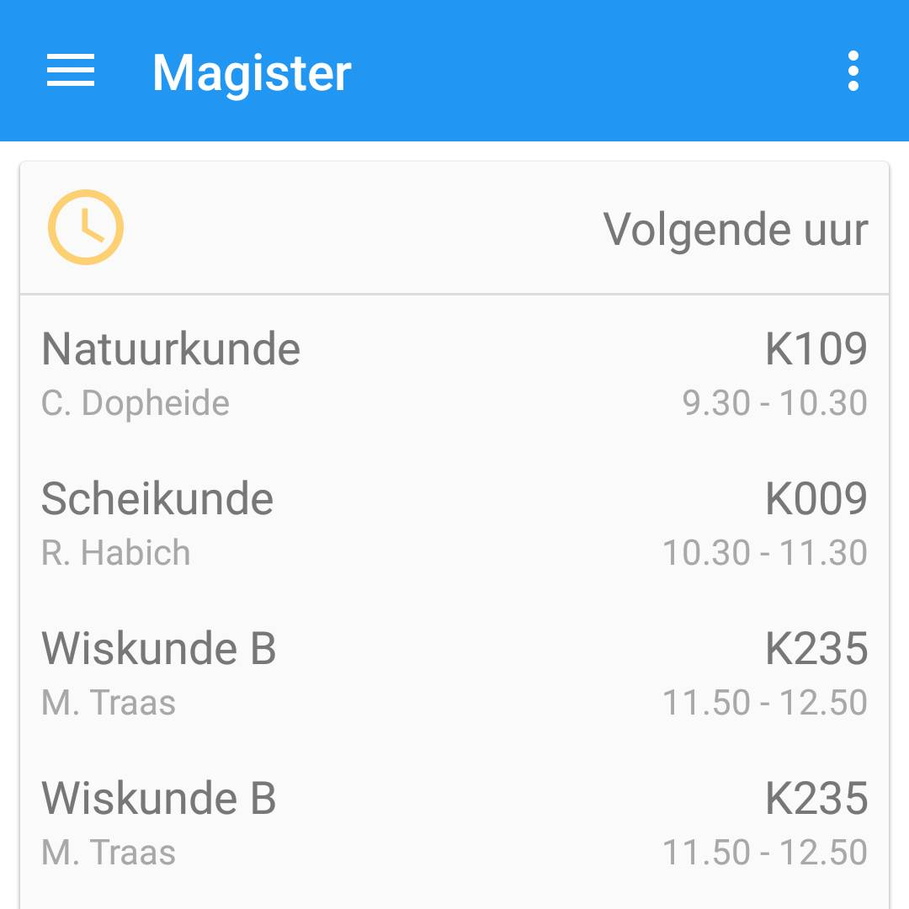
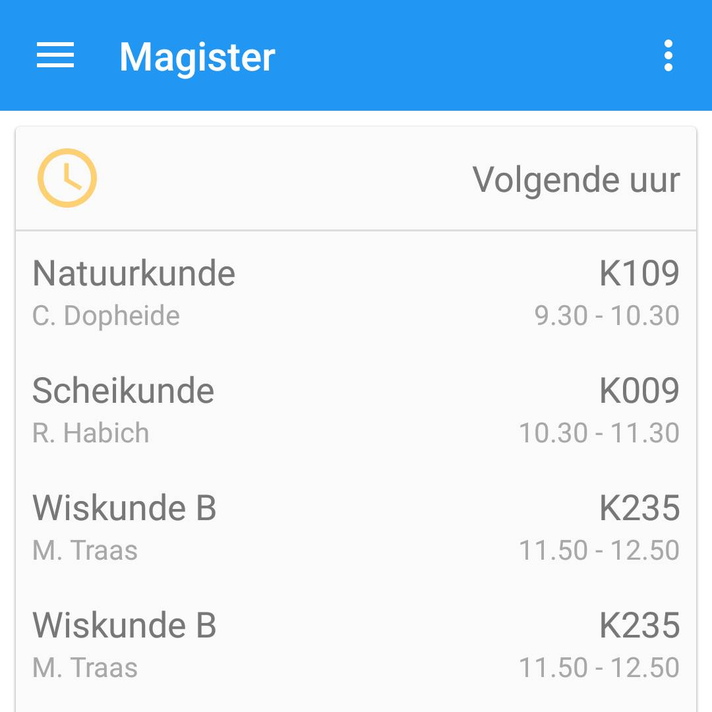

Wij hebben een Magister app gemaakt voor Android. Dit hebben wij gedaan omdat de bestaande Magister app niet aan onze eisen voldoet. Sterker nog, volgens velen word beweerd dat de bestaande Magister app helemaal geen app is, maar slechts een link naar de browser. Ons Research team zit hier bovenop en wij zullen hier dan ook zo spoedig mogelijk uitspraak over doen.
Tot die tijd zijn hier nog wat leuke foto's van leuke dingen


 

Deze website is geen grap.